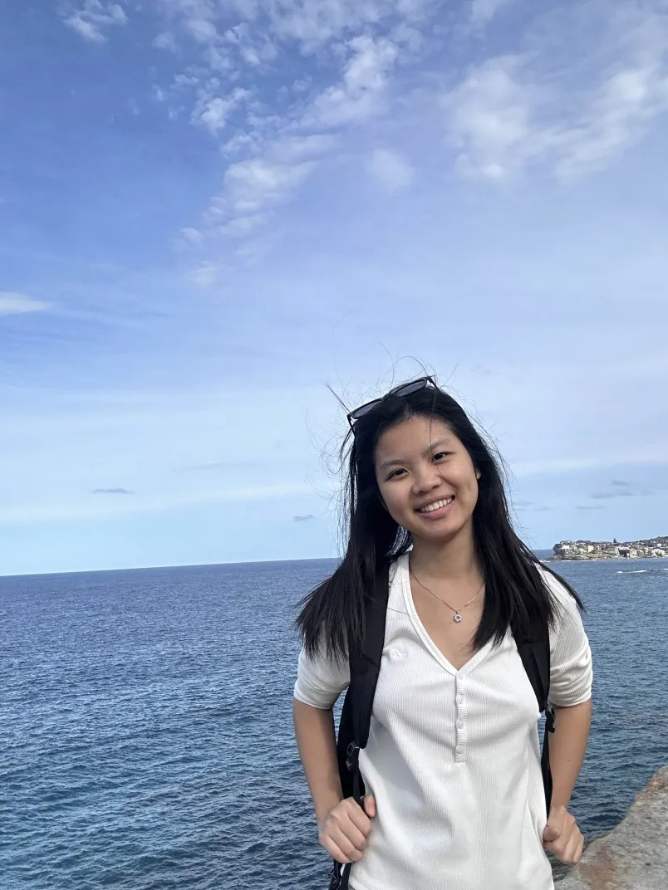
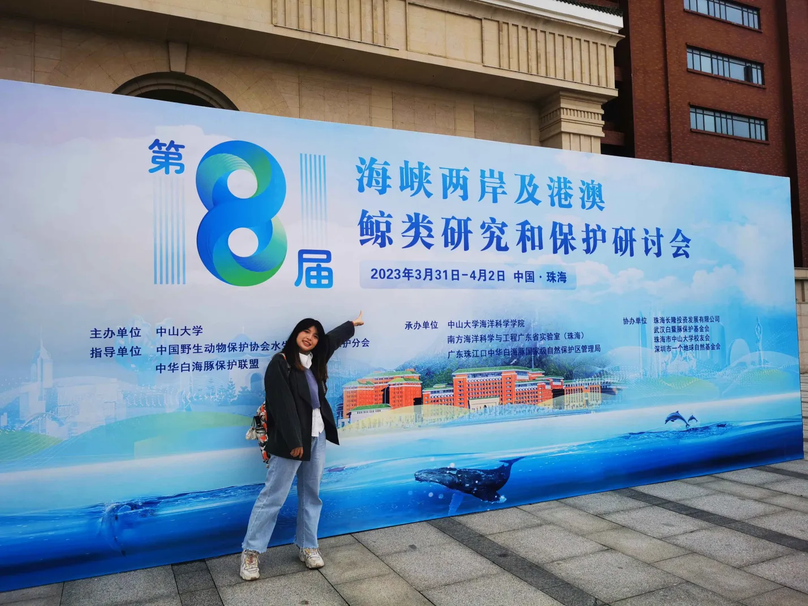
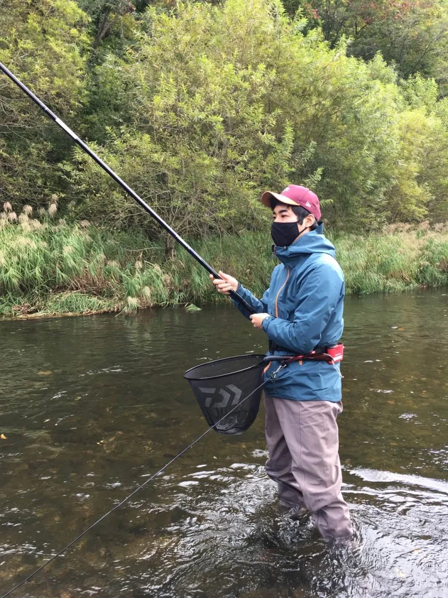
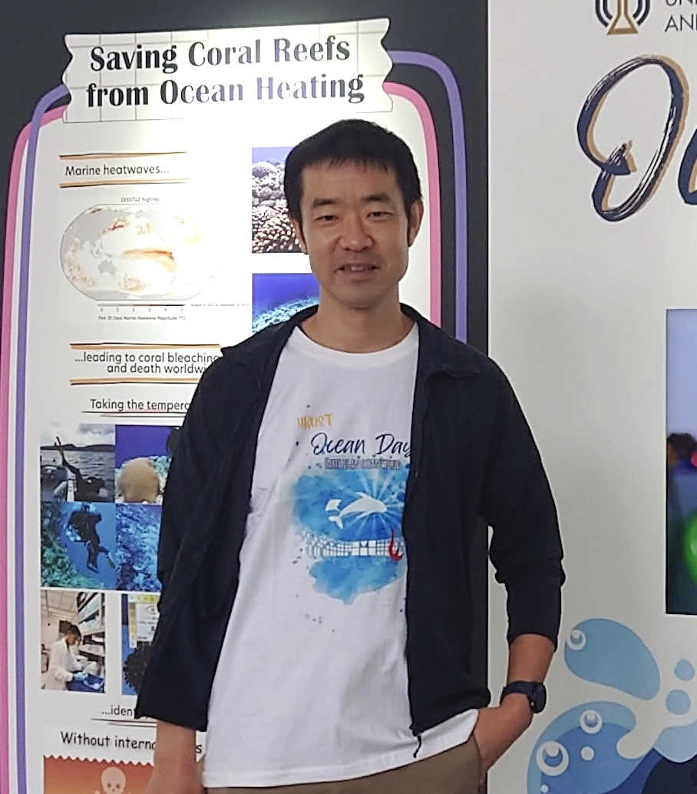
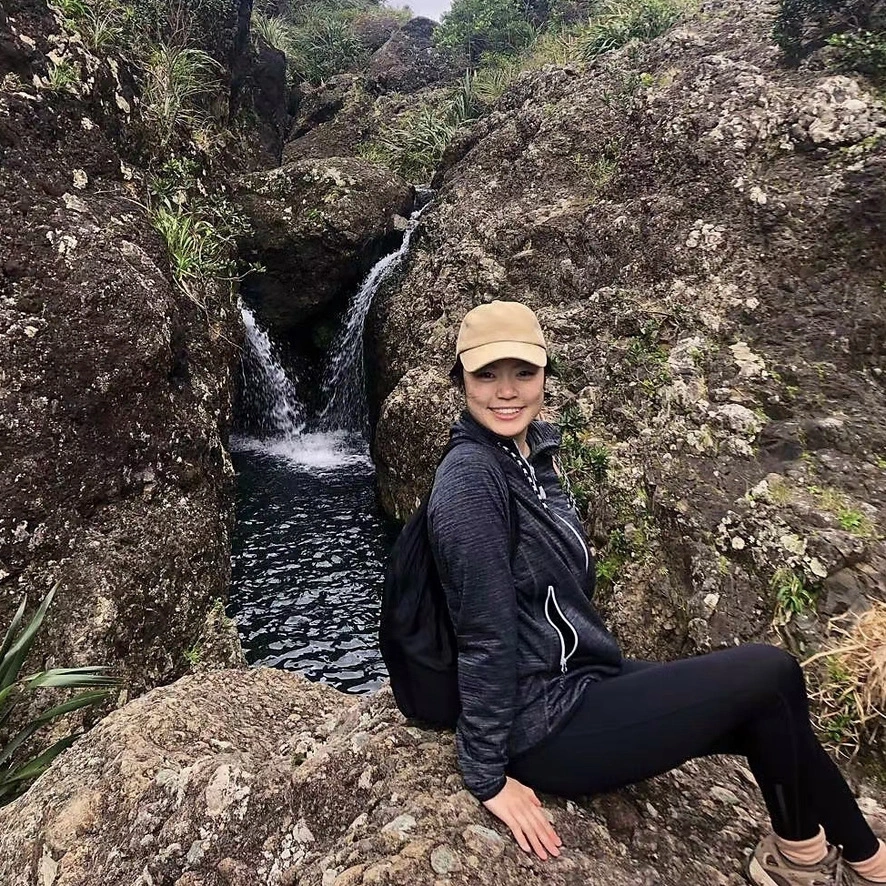
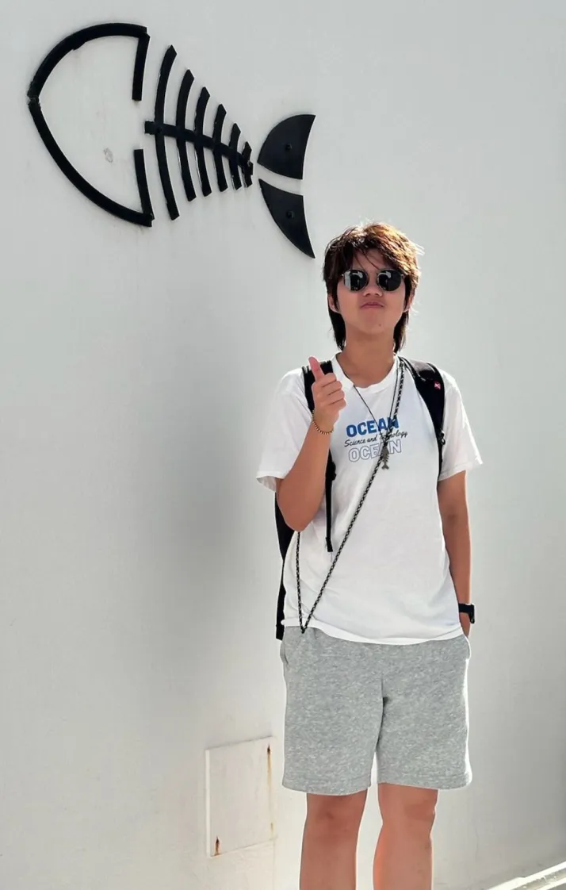

Members
Current members
Suixuan HUANG (MPhil, Sep 2023~)

- Bachelor (2023, Sun Yat-sen University, China)
- Research interest: Red tide monitoring, Satellite data analysis, Time series analysis
- Research project: Forecasting harmful algal bloom events
Robinson KISERO (MPhil, Sep 2023~)

- Master (2023, The University of Nairobi, Kenya)
- Research interests: As a marine biologist, I am extremely committed to learning about and protecting the different ecosystems that exist in our seas and oceans. I have been fascinated by the potential of environmental DNA (eDNA) as a strong tool for understanding marine ecosystems. I am certain that incorporating eDNA analysis into marine ecology studies can yield useful insights on marine creature biodiversity, population dynamics, and conservation. Hong Kong University of Science and Technology (HKUST) is second to none in enhancing my potential and projecting me to a record high level of marine life conservation.
Xiaoqi LIN (PhD, Sep 2024~)

- Bachelor (2021, Ocean University of China, China)
- Master (2024, Shantou University, China)
- Research interest: Environmental DNA
- Research project: Cetacean eDNA monitoring project
Chengbin LIU (MPhil, Sep 2024~)
- Bachelor (2024, Zhejiang University, China)
- Research interest: Environmental DNA
- Research project: Cetacean DNA methylation project
Takamitsu OHIGASHI (JSPS Postdoc, June 2024~)

- PhD (2024, Hokkaido University, Japan)
- Contact: ocesohigashi (at) ust.hk
- Research interest: Microbial ecology, Material cycling, Species-environment interaction
- Research project: Ecosystem monitoring using eDNA, Time series data analysis of fish communities
- Personal website, Google Scholar Profile
Masayuki USHIO (Principal Investigator, Sep 2022~)

- Ph.D. (Science) (2010, Kyoto University, Japan)
- Contact: ushio (at) ust.hk
- Research interests: Ecosystem dynamics, Environmental DNA, Microbial community, Statistical analysis, Machine learning
- Teaching:
- 2023/24 Fall: OCES3601 (Ecology), OCES1001 (omnibus)
- 2023/24 Spring: DASC3240 (Data Visualization in Science), OCES4103 (Fisheries and Aquaculture), OCES1001 (ominibus), SCIE1500 (ominibus)
- 2024/25 Fall: OCES3601 (Ecology), OCES1001 (omnibus)
- Personal website, Google Scholar Profile, Github
Co-supervising students
Lucia HU (MPhil, Sep 2024~)

Alex Wyatt Lab
- Bachelor of Science (Hon) (Marine Science) (2024, Auckland University of Technology, New Zealand)
- Bachelor of Science (Marine Ecology and Zoology) (2018, Massey University, New Zealand)
- Research interest: Habitat connectivity (coastal darkening), Marine genomics, Deep-sea ecology, Taxonomy
- Research project: I want to explore the idea of habitat connectivity – looking at how terrestrial modifications can physically and biologically alter adjacent marine ecosystems. I want to learn and utilise eDNA as a biomonitoring tool to assess how species composition changes within rapidly evolving coasts and deep water coral systems. I am also a massive fan of museums, which have an abundance of archival species. Therefore, as part of my research, it would be exciting to reconstruct historical communities and compare them to current coral communities under higher human-induced and natural impacts.
Ming Wai LI (Taylor) (MPhil, Sep 2024~)

Charmaine Yung Lab
- Bachelor (2024, HKUST, Hong Kong SAR)
- Research interest: My research focuses on applying environmental DNA (eDNA) technology to marine community and ecosystem management, with a particular emphasis on fish populations. I am passionate about exploring the potential of eDNA in fisheries management and conservation, aiming to contribute to more sustainable practices in marine ecosystems.
- Research project: HK grouper project